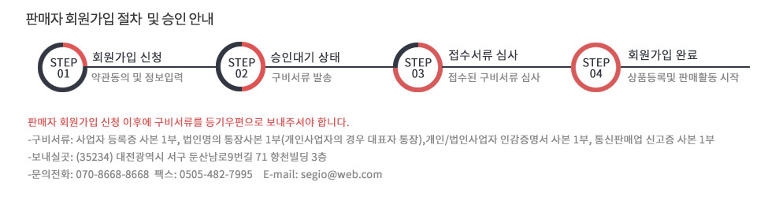

판매 상품의 서비스의 성실한 이행이 필요하며, 상품 및 서비스 판매에 대한 소비자 보호 및 사후관리가 보장되어야 합니다. 저희 쇼핑몰과 관련된 상품 등록/관리, 고객상담 부분의 책임자가 있어야 하며,
신뢰있는 택배사와의 제휴로 배송이 보장되어야 합니다.
샘플 테스트를 요청할 수 있으며, 테스트 결과에 때라 입점 불과 및 퇴점 될 수 있습니다.
판매 수수료 및 대금 정산 부분은 입점업체가 원가에서의 판매 금액을 제시하면 판매수수료 및 판매 대금 정산은 계약 시 협의를 통해 결정됩니다.